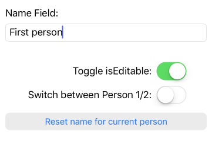

A view construction syntax
In this article, I’m going to look at constructing Cocoa views in code.
On its own, that’s not a particularly daring idea but I’m going to use a unique syntax to aid the process:
UITextField(
.text -- model.map { $0.name },
.enabled -- true
)This code trades conventional parameter: value syntax for a custom .parameter -- value syntax and uses this change to offer a few advantages: dynamic and constant options with no syntactic overhead, support for parameters inherited through the class hierarchy, support for large numbers of optional parameters without needing to push unused parameters onto the stack, avoidance of parentheses, and avoiding the need to specify types – all while remaining completely typesafe.
I’ll be looking at how this syntax is implemented and the various tricks it uses to make the Swift type system do all the menial work.
This article is a sneak peek at one of the key ideas in an upcoming library named CwlViews that should be available soon. A ViewConstruction.playground is available right now, so you can play with the examples presented in this article.
Aim
In an app wireframe (a rough layout of a user-interface provided by the graphic artist or user-experience designer), a UITextField might be appear as a simple box. The wireframe usually gives (or implies) the layout constraints required for the text field but otherwise might not offer any information about the behaviors of the text field.
When implementing user interfaces, before I start coding, I normally go through the wireframes and break down each element of the user interface with descriptions that look like this:
nameField: UITextField
- borderStyle: `.roundRect`
- isEnabled:
`true` if `personViewState.isEditing` is `true`, otherwise `false`
- backgroundColor:
`.white` while `personViewState.isEditing` is `true`, otherwise `.lightGray`
- text:
- `name` value of `Person` object in `Document` where `id`==`personViewState.id`
- on UITextFieldDidChange:
- set `name` value of `Person` object in `Document` where
`id`==`personViewState.id` to the value of `text`
I write this type of description because it’s how I mentally consider the properties of the view. It’s really just a list of view properties and the behaviors I want them to have. Structurally, it resembles a property list, similar to YAML or other text-based property formats. The precise syntax involved isn’t as important as the relatively simple structure.
Ideally, I would like my view construction code to look as close to this description as possible.
As we’ll see though, typical Cocoa view construction code looks nothing like this.
Interface Builder?
This article is about building views in code. It’s worth briefly discussing why we would construct in Swift code, given that Apple promote construction via Interface Builder as a first choice.
The original idea behind Interface Builder was to offer a “what-you-see-is-what-you-get” editor for pixel-based layout of fixed sized windows and dialogs. The original Interface Builder ran the program, live – so it actually was WYSIWYG – and fixed size windows were the norm. None of this has been true for years.
Instead, the common uses for Interface Builder are:
- configuring auto-layout constraints
- setting values for some (but not all) constant properties in Interface Builder
- defining segues
- supporting Storyboard-based view-state restoration
For a range of reasons though, none of these are valuable to me.
On the first point: I find using specifying individual constraints in Interface Builder is laborious and frustrating. As I mentioned in CwlLayout: a Swift wrapper around Auto Layout, I prefer to specify layout by intent and let the framework handle specific constraints (as with UIStackView or my own CwlLayout).
On the second point: the difficult properties to handle are the dynamic properties but Interface Builder helps only with constant properties. Even with constant properties, as my apps grow, I usually end up with pre-prepared sets of properties – “Styles” – for the views in my app and you can’t really do this in Interface Builder, either.
On the third point: I strongly dislike how data is propagated during segues, requiring cooperation between perform(segue:) and prepare(for:) and needing one UIViewController to push key data to another UIViewController after construction. This might seem like empty complaining but with data dependencies and data propagation being the single most important pipeline in an application, actively promoting bad practices like cooperative coupling and side-effects is a show stopping issue. Accordingly, I tend not to use segues, in favor of manual UIViewController construction and transitions.
On the fourth point: if you use a persistent view-state approach, like the Model-View-Controller + ViewState approach I showed in the previous article, state restoration is already a part of the process, without needing Storyboards or restoration identifiers. So I don’t use Storyboard state restoration.
Like most long-term Cocoa programmers, I’ve gone back-and-forth about how much or little to use Interface Builder in my projects. Interface Builder has always been a core component of Cocoa development, as it was a core component of NeXTStep and ExperLISP before that. Writing Cocoa “properly” has generally involved using Interface Builder in some capacity.
For the last few years though, the only argument in favor of Interface Builder has been that constructing Cocoa views in Objective-C/Swift is ugly. It’s not technically difficult to construct one or two views in code but the construction involves multiple statements without any obvious structure and as you add more views, the lack of structure leads to messy, hard to read code.
The purpose of this article is to talk about the process I’ve gone through, trying to building views in Swift code using a clear, structured syntax so it might be a manageable alternative to Interface Builder.
Construction in normal Cocoa code
Nearly every view can be default constructed:
UITextField()It’s a zero sized view with no contents and a transparent background – not that you’d notice at this point, since it’s a zero sized view.
Let’s set some simple values on this text field so that we can see it:
let nameField = UITextField(frame: CGRect(x: 5, y: 5, width: 300, height: 80))
nameField.text = someTextValue
nameField.isEnabled = false
nameField.backgroundColor = .whiteImmediately, you can see an inconsistency: some properties can be set through the constructor (in the case of a UITextField, the frame) but most properties require separate steps.
The fact that the frame can be set in the UIView constructor might make this property appear important but its presence is an anachronism. In an auto-layout world, setting the frame is completely useless – layout constraints will totally override any value we set here. We might as well stick with the default constructor.
Setting the other properties isn’t much more helpful. In my description of the UITextField, all of these properties are supposed to be dynamic which means that they have a data dependency on another value elsewhere in the program. Setting them here in isolation – without a connection to their data dependency – is dangerous; it can make them look as though they’ve been correctly configured when they are not.
It’s far better to handle dynamic properties when we set up our connection to the data dependency. We should use some form of observing that guarantees to immediately provide the initial value. In the previous article, I used an addObserver wrapper around NotificationCenter.addObserver that guaranteed this.
Let’s properly construct the UITextField with all of the requirements specified in my text description in the “Aim” section.
var nameField: UITextField?
var personViewState: PersonViewState?
var person: Person?
var observations: [NSObjectProtocol] = []
override loadView() {
let field = UITextField()
self.nameField = field
// Constant properties
field.borderStyle = .roundedRect
// Dynamic properties
observations += ViewState.shared.addObserver { [weak self] state in
guard let s = self else { return }
s.personViewState = state.personViewState
s.nameField?.isEnabled = state.personViewState.isEditing
s.nameField?.backgroundColor =
state.personViewState.isEditing ? .white : .lightGray
if s.person?.id != state.personViewState.id,
let person = Document.shared.person(forId: state.personViewState.id) {
s.updatePerson(person)
}
}
observations += Document.shared.addObserver { [weak self] document in
guard let s = self, let id = s.personViewState?.id,
let person = document.person(forId: id) else { return }
s.updatePerson(person)
}
// Actions
let o = NotificationCenter.default.addObserver(forName: .UITextFieldDidChange,
object: field, queue: nil) { [weak self] n in
guard let s = self, let text = (n.object as? UITextField)?.text,
let pvs = s.personViewState else { return }
Document.shared.setName(text, forPersonId: pvs.id)
}
observations.append(o)
}
func updatePerson(_ person: Person) {
self.person = person
nameField.text = person.name
}Ouch! That’s gigantic! What happened?
Even with a wrapper around NotificationCenter.addObserver to make it more syntactically efficient, my eleven line text description has turned into 30+ lines of multi-structured, visually complex code. The actual properties we’re manipulating are lost in the middle somewhere.
There’s a number of reasons why the code is verbose and complex. The biggest problems are the cross dependency between the Person model object and the PersonViewState (because we want to observe the Person identified by the id on the view’s PersonViewState), the clumsy need to observe the .UITextFieldDidChange notification to get the text changes and the continual need to use weak self and other quirks associated with callbacks from a child object needing to access data and methods on the parent view controller.
Reactive programming
I’ve previously shown how reactive programming can be used to simplify observing code. By taking advantage of the flatMapLatest operator (which starts a new observation when its input changes) and some other mapping and combining functions, we can dramatically simplify these dependent observations:
var endpoints: [Cancellable] = []
func constructTextField() {
let field = UITextField()
self.nameField = field
// Constant properties
field.borderStyle = .roundedRect
// Dynamic properties
self.endpoints += ViewState.shared.personSignal.subscribeValues { state in
field.isEnabled = state.isEditing
field.backgroundColor = state.isEditing ? .white : .lightGray
}
self.endpoints += ViewState.shared.personSignal
.flatMapLatest { Document.shared.signalForPerson(withId: $0.id) }
.map { $0.name }
.subscribeValues { field.text = $0 }
// Actions
signalFromNotifications(name: .UITextFielddidChange, object: field)
.filterMap { ($0.object as? UITextField)?.text }
.triggerCombine(ViewState.shared.personSignal)
.map { .setName($0.trigger, $0.sample.id) }
.bind(to: Document.shared)
}This is much better: half the size of the previous example and eliminating some of the quirks like the need for weak self in the observing closures. Most importantly for clarity and maintenance: with the data dependencies combined cleanly, each UITextField property is updated on just a single path.
But it’s still 5 separate statements to properly define a single UITextField and you need to look closely to see that this code exists to configure the nameField since the references to this view are buried deep inside the subscribeValues closures.
It’s also pretty strange to require an endpoints property (for maintaining the lifetime of the subscribeValues observing) on the UIViewController. This effectively makes the UIViewController, not the UITextField, the observer of the changes. It would be better if the UITextField were the owner of its own reactive lifetimes.
Extending UITextField so that it exposes a signal input and output for each settable property and observable action – a common approach in reactive programming frameworks like ReactiveCocoa or RxCocoa – would eliminate another line or two but wouldn’t otherwise improve the structure of the code: it would still require disposables to be held by the UIViewController, would still require a handful of separate statements to fully describe a single view and would still hide the affected view and properties deep inside larger expressions.
I want everything to be a single, self-contained expression where the UITextField manages its own behaviors, rather than requiring another object to facilitate.
Everything in a single expression
For a moment, let’s set aside the difficulties of dynamic properties and output actions. We’ll come back to them later.
It is very simple to write a specialized constructor to configure the UITextField properties that we care about in a single expression:
UITextField(
borderStyle: .roundedRect,
text: someTextValue,
isEnabled: false,
backgroundColor: .white,
textChanged: someSignalInput
)The real question is: can we use this approach to solve the general case, not just a specialized case?
We could write an init function that had parameters for every possible property and offered default values for each parameter, so we could specify only those parameters for which we want non-default values. For a basic UIView – considering only those properties on UIView itself – there’s about 25 properties that you might want to set on construction.
Here’s how an init function with all of these parameters might look:
extension UIView {
init(
alpha: CGFloat = 0,
backgroundColor: UIColor? = nil,
clearsContextBeforeDrawing: Bool = true,
clipsToBounds: Bool = false,
contentMode: UIViewContentMode = .center,
exclusiveTouch: Bool = false,
gestureRecognizers: [UIGestureRecognizer] = [],
horizontalContentCompressionResistancePriority: UILayoutPriority = . defaultHigh,
horizontalContentHuggingPriority: UILayoutPriority = .defaultLow,
layoutMargins: UIEdgeInsets = UIEdgeInsets(top: 0, left: 0, bottom: 0, right: 0),
mask: UIView? = nil,
motionEffects: [UIMotionEffect] = [],
multipleTouchEnabled: Bool = false,
opaque: Bool = false,
preservesSuperviewLayoutMargins: Bool = false,
restorationIdentifier: String? = nil,
semanticContentAttribute: UISemanticContentAttribute = .unspecified,
tag: Int = 0,
tintAdjustmentMode: UIViewTintAdjustmentMode = .automatic,
tintColor: UIColor = .white,
userInteractionEnabled: Bool = true,
verticalContentCompressionResistancePriority: UILayoutPriority = .defaultHigh,
verticalContentHuggingPriority: UILayoutPriority = .defaultLow
) { /* ... */ }
}The autocomplete feature in Xcode starts to get a little weird with this many defaulted parameters. Autocomplete issues might seem like a minor inconvenience but since the entire purpose of this construction code is supposed to be convenience, it merits consideration.
Another inconvenience is that Swift requires parameters be provided in-order. For long lists of properties, you’d probably need to carefully keep things in alphabetical order to make it work - which is a hassle since properties like these are not inherently an ordered concept.
This approach really becomes strained when we look at inheritance hierarchies. There’s as many as 30 properties you might set on a UITextField, plus 6 on UIControl plus the 25 on UIView. That’s over 60 parameters before we’ve included actions, delegates and oddities like how to handle mutability, all of which would likely increase (and in the case of mutability multiply) the number of parameters required.
Now, Swift itself doesn’t really mind if you pass hundreds or even thousands of defaulted parameters to a function. I generated a function with 10,000 parameters while writing this article and it appeared to work without issue.
The real problem with huge numbers of parameters is in maintaining all the constructors across multiple levels of subclass. If every UIView subclass has a constructor that needs to repeat every UIView property then every time UIView changes its set of properties, all UIView subclass constructors would need to be updated. This is completely unreasonable.
Enum cases as parameter names
Let’s try a different approach. In my previous article, CwlLayout: a Swift wrapper around Auto Layout, I showed a syntax where the parameters to a function were a variable argument list of enum cases. Here’s how it looked:
Layout.horizontal(
.sizedView(left, .lengthEqualTo(ratio: 0.75)),
.space(20),
.view(right)
)We can use a similar approach here by creating an enum with all the properties from UIView:
enum ViewBinding {
case alpha(CGFloat)
case backgroundColor(UIColor?)
case clearsContextBeforeDrawing(Bool)
// ... and so on
}and then we can write an init function that accepts a variable number of these arguments:
extension UIView {
init(_ bindings: ViewBinding...) {}
}and construct UIView like this:
UIView(
.alpha(0.5),
.backgroundColor(.white)
)This looks like it might be more promising. Parameters don’t need to be provided in-order, it’s not going to have the autocomplete problems in Xcode and it’s not going to put hundreds of parameters onto the stack each time.
There’s the slight weirdness that you could inadvertently provide two instances of the same parameter, e.g.:
UIView(
.backgroundColor(.white),
.backgroundColor(.blue)
)There shouldn’t be any valid reason to do this but it isn’t any worse than setting the same property twice in code – a waste of time but not a show stopping scenario.
A bigger problem is that there’s no solution here for inheritance. If we had to exhaustively enumerate all UIView properties in each UIView subclass, then a change to UIView would still break every UIView subclass.
Enums with inheritance
We could wrap the parameters of the inherited class in an inheritedBinding case:
enum TextFieldBinding {
case inheritedBinding(ControlBinding)
case text(String)
// other UITextField properties
}
enum ControlBinding {
case inheritedBinding(ViewBinding)
case enabled(Bool)
// other UIControl properties
}
enum ViewBinding {
case alpha(CGFloat)
case backgroundColor(UIColor?)
case clearsContextBeforeDrawing(Bool)
// ... and so on
}We could use this to create an init method on UITextField capable of this:
UITextField(
.text(someTextValue),
.inheritedBinding(.enabled(.false)),
.inheritedBinding(.inheritedBinding(.backgroundColor(.white)))
)Technically works but it’s starting to get a little goofy. Needing to remember the correct inheritance level and correctly specify it is annoying and the real information on each line is starting to get a little lost in layers of wrapping.
Fortunately, Swift has the ability to look up static members using the dot operator so we could simplify this slightly by adding a static function on TextFieldBinding that shortcuts to any subclass:
extension TextFieldBinding {
static func controlBinding(_ Binding: ControlBinding) -> TextFieldBinding {
return .inheritedBinding(.param)
}
static func viewBinding(_ Binding: ViewBinding) -> TextFieldBinding {
return .inheritedBinding(.inheritedBinding(.param))
}
}and we could rewrite the initialization as:
UITextField(
.textFieldBinding(.text(someTextValue))
.controlBinding(.isEnabled(false))
.viewBinding(.backgroundColor(.white))
)The .textFieldBinding wrapper isn’t required here but I’ve included for consistency.
This does address the problems of inheritance and large numbers of defaulted parameters but the aesthetics are certainly not ideal. The property name that we’re trying to set is buried in the middle of each line and there’s two layers of parentheses required to wrap the contents.
And I’ve been omitting the most important part: these parameters are constant and I want a solution that handles dynamic parameters.
Dynamic values
We need to be able to satisfy any property with a dynamic value – a property that gets its value from a dynamic source, like a reactive programming signal. Of course, just because a property can be dynamic, doesn’t mean it must be dynamic. This means that we need to be able to set any dynamic property in two different ways:
- Constant (e.g. a value like
.white) - Dynamic (e.g. a signal like
signal.map { $0.isEditing ? .white : .lightGray })
To handle these two scenarios, the associated values in our Binding enum values will no longer be simple types (like String or UIColor or Bool) and will instead be wrapped in DynamicValue so we can provide .constant or .dynamic versions:
public enum DynamicValue<Value> {
case constant(Value)
case dynamic(Signal<Value>)
}Our construction might then become:
UITextField(
.textFieldBinding(.text(.dynamic(ViewState.shared.personSignal
.flatMapLatest { Document.shared.signalForPerson(withId: $0.id) }
.map { $0.name }
))),
.controlBinding(.enabled(.dynamic(ViewState.shared.personSignal
.map { $0.isEditing }
))),
.viewBinding(.backgroundColor(.dynamic(ViewState.shared.personSignal
.map { $0.isEditing ? .white : .lightGray }
)))
)The UITextField owns the endpoints that keep the bindings alive. These endpoints are stored with the object itself using objc_setAssociatedObject. Since bindings must be created on construction – they cannot be added later – we can do this efficiently and set an associated storage only if the object has dynamic bindings that need to be retained.
Conceptually, this is what I want but it looks really clumsy and we’re approaching a LISP-level of parentheses.
Hiding dirty work in the type system
Let’s start by trying to hide the .dynamic/.constant wrapper.
There’s an interesting trick for enum cases with associated values: if they are used without their associated values, they refer to their own construction function. For example, TextFieldBinding.text has the type (DynamicValue<String>) -> TextFieldBinding (a function that constructs a TextFieldBinding from a DynamicValue<String>).
We can use this trick to build abstractions around our enum cases. For example, we could construct overloaded versions of the existing viewBinding, controlBinding and textBinding static functions – one that takes dynamic values and another that takes constant values.
Here’s an example of an overload version of the viewBinding static function:
extension TextFieldBinding {
static func viewBinding<Value>(
_ name: (DynamicBinding<Value>) -> ViewBinding,
_ value: Value) -> TextFieldBinding {
return .inherited(.inherited(name(.constant(value)))
}
static func viewBinding<Value>(
_ name: (DynamicBinding<Value>) -> ViewBinding,
_ value: Signal<Value>) -> TextFieldBinding {
return .inherited(.inherited(name(.dynamic(value)))
}
}This is probably confusing to read but notice that the first of these overloads uses an unwrapped Value as the second parameter and returns a .constant at the center of the wrapping layers, whereas the second takes a Signal<Value> and wraps in .dynamic.
Here’s the effect on the code:
UITextField(
.textFieldBinding(TextFieldBinding.text, ViewState.shared.personSignal
.flatMapLatest { Document.shared.signalForPerson(withId: $0.id) }
.map { $0.name }
),
.controlBinding(ControlBinding.isEnabled, ViewState.shared.personSignal
.map { $0.isEditing }
),
.viewBinding(ViewBinding.backgroundColor, ViewState.shared.personSignal
.map { $0.isEditing ? .white : .lightGray }
)
)Hmm. We did get rid of the .constant/.dynamic wrapper but we’ve been forced to fully specify the type of the first parameter to .textFieldBinding/.controlBinding/.viewBinding because the expected parameter is now a function instead of a TextFieldBinding/ControlBinding/ViewBinding and because of this, we can’t use . lookup.
That’s a real nuisance. We made a syntactic saving in one spot only to lose most of it in another.
Intermediate type
To get the . lookup back for the first parameter, we can use an intermediate type to provide a location for . lookup to occur and encapsulate the desired (Value) -> TextFieldBinding function internally.
I’m going to use a type named BindingName as the intermediate type. This type will be defined as follows:
public struct BindingName<Value, Binding> {
public var constructor: (Value) -> Binding
public init(_ constructor: @escaping (Value) -> Binding) {
self.constructor = constructor
}
}
extension BindingName where Binding: TextFieldBinding {
public static var text: BindingName<DynamicValue<String>, Binding> {
return BindingName<DynamicValue<String>, Binding>({ v in
.textFieldBinding(TextField.Binding.text(v))
})
}
}The constructor property of this type can then be used by the viewBinding/controlBinding/textFieldBinding wrappers in place of the previous name function.
With this, .text, .isEnabled and .backgroundColor no longer require a full typename:
UITextField(
.textFieldBinding(.text, ViewState.shared.personSignal
.flatMapLatest { Document.shared.signalForPerson(withId: $0.id) }
.map { $0.name }
),
.controlBinding(.isEnabled, ViewState.shared.personSignal
.map { $0.isEditing }
),
.viewBinding(.backgroundColor, ViewState.shared.personSignal
.map { $0.isEditing ? .white : .lightGray }
)
)A little operator overloading
This is almost what I want but I still don’t like the fact that a wrapper function is the first visual element on each line. The only way to omit this wrapper in Swift is with operator overloading.
The idea is to replace the textFieldBinding, controlViewBinding and viewBinding wrapper functions with an operator overload that does the same work. I am not normally a fan of custom operators but I opted to use one here after becoming frustrated with scenarios involving huge numbers of closing parentheses (three or four closing parentheses becomes very difficult to read).
I opted to use the custom operator -- (two hyphens) because it’s easy to type, is very visually light and it resembles an em-dash which might be validly used for separating keys and values in a list. I realize that it is used to denote code comments in some languages but I don’t think that’s a major conceptual conflict for use as a key-value separator.
The final result is that the function looks like this:
UITextField(
.borderStyle -- .roundedRect,
.enabled -- ViewState.shared.personSignal
.map { $0.isEditing },
.backgroundColor -- ViewState.shared.personSignal
.map { $0.isEditing ? .white : .lightGray },
.text -- ViewState.shared.personSignal
.flatMapLatest { Document.shared.signalForPerson(withId: $0.id) }
.map { $0.name },
.didChange -- Input()
.triggerCombine(ViewState.shared.personSignal)
.map { .setName($0.trigger, $0.sample.id) }
.bind(to: Document.shared)
)I’ve included the the .didChange action binding here. Unlike the other bindings which model setter properties on the UITextField, this .didChange binding models a callback.
On a syntactic level, the only difference here is that instead of an enum case with a DynamicValue<T>, the .didChange case has an associated SignalInput<String>. An additional overload of the -- operator matches this SignalInput scenario and ensures we provide the appropriate right-hand-side.
The right-hand-side of the -- operator constructs a new Input() to receive the callback and the String parameter in the callback is combined with the id from the ViewState.shared.personSignal before sending a setName message through to the Document with a bind(to:) call.
Alternatives
I’ve gone back and forth on the design for this view construction syntax as much as any other code I’ve written. If you’re wondering why I didn’t choose a different approach… I probably did, for a while, and either ran into a problem or otherwise grew to dislike something.
One of the obvious alternatives is avoiding the custom operator. It is possible to implement a version with all the same features but looks like this:
UITextField(
.text(model.map { $0.name }),
.enabled(true)
)My dislike of custom operators fought my dislike of parentheses and lost. It didn’t help that this approach required multiple overloads of each binding name to allow dynamic/constant and other variants so it wasn’t as extensible.
I also spent a long time using separate <-- and --> operators for inputs and outputs. This was originally due to an older implementation where the operator overloads weren’t scaling well. I split the operator to lighten the overload resolution burden on the type system. After some restructuring, the operator resolution performance improved but I kept the separate operators for a while. Showing a direction for “inputs” and “outputs” might seem helpful but the types, the parameter names and the values you supply already indicate the direction of data flow and I liked the much plainer key-value styling of using -- everywhere, rather than trying to be visually clever about it.
Drawbacks
It’s usually not a good idea to use an overloaded operator like -- inside array-literal square brackets. Past a half dozen values it can start to resolve slowly. This is a problem that could occur by accident if you’re not paying attention. If you want to construct an array of these bindings, construct the array on its own line and assign to a variable with a fully specified type – Swift uses optimized type inference in this scenario.
There’s a related problem when constructing a large generic type using this syntax. If resolving the -- terms is required to resolve the generic parameters, it’s not going to scale past a dozen or so parameters. Far better to explicitly specify your generic parameters.
Variable argument lists really confuse the Swift compilation error reporting mechanism. Accidentally omit a comma, add an extra comma, mix up your types, or make some other typo and the Swift compiler might:
- suggest you fix the second argument (even if the error is in the 20th argument)
- suggest you add a parameter name, even though no parameters should be named
- complain about being unable to resolve generic parameters that are explicitly specified
- complain that there are too many arguments in your variable argument list
As an example, during the writing of this article, I accidentally wrote:
.borderStyle -- .roundRect,when the correct spelling is:
.borderStyle -- .roundedRect,Swift’s error message was “Generic parameter ‘Interface’ could not be inferred”. Interface is a generic parameter on one of the -- operator overloads – but it’s on a different overload to the one you’d expect, here. The error message might as well be Swift shrugging its shoulders “Um… not sure?”
With this type of code, you need to consider that any error reported by the compiler may point to the wrong location or otherwise indicate that the compiler has no idea at all what’s gone wrong. There are plenty of cases where I’ve needed to comment out parameter lines to narrow down the location of the problem.
If you’re having difficulty isolating why a compiler error is occurring in a given line, you can always replace the optimized syntax:
.borderStyle -- .roundedRect,with the verbose syntax:
.textFieldBinding(.borderStyle(.constant(.roundedRect))),Swift tends to give much better error reporting as you start to make things more explicit. Theoretically, you could be completely explicit:
TextField.Binding.textFieldBinding(
TextField.Binding.borderStyle(
DynamicValue<UITextFieldBorderStyle>.constant(
UITextFieldBorderStyle.roundedRect
)
)
),although I’ve never had to go that far and there’s a reason why we want the compiler to do this work for us.
Take another look at that last code sample. We need only write .borderStyle -- .roundedRect and the compiler fills in the remainder – that’s what this article is all about.
Usage
You can play with some of the examples in this article in the ViewConstruction.playground. The playground builds the following view:

The nameField discussed in this article is visible at the top, along with some basic controls to alter the View-state and the Document to observe the effects on the UITextField.
The playground includes three different code paths that can construct this UITextField:
- standard Cocoa
cocoaViews - reactive programming
reactiveViews - the
cwlViewsapproach
They should all appear the same to the user.
The “Sources” folder in the playground contains a collection of files hastily butchered from CwlViews and a lazily constructed “Model” to provide the ViewState and Document in the examples. The result is not easy to read and the only purpose is to keep the actual playground page functional. The purpose of this playground is purely to present the ViewContruction playground page itself.
Conclusion
I aimed to construct a view in a single, self-contained expression using a syntax that resembled a declarative description of properties. The result is the following syntax:
UITextField(
.borderStyle -- .roundedRect,
.enabled -- ViewState.shared.personSignal
.map { $0.isEditing },
.backgroundColor -- ViewState.shared.personSignal
.map { $0.isEditing ? .white : .lightGray },
.text -- ViewState.shared.personSignal
.flatMapLatest { Document.shared.signalForPerson(withId: $0.id) }
.map { $0.name },
.didChange -- Input()
.triggerCombine(ViewState.shared.personSignal)
.map { .setName($0.trigger, $0.sample.id) }
.bind(to: Document.shared)
)The result is 14 lines, versus 11 lines in the original text description. It’s less than half the length of common Cocoa code to achieve the same result with significantly clearer structure.
It’s possible that the right-hand side might look cluttered or cryptic if you’re unfamiliar with reactive programming. However, even if you can’t read code at all, the structure of the code should reveal what it does: it is a list of 5 properties (.borderStyle, .enabled, .backgroundColor, .text and .didChange) that we’re specifying on a UITextField.
If you do understand code and you know how verbose and unstructured this type of code can be, then you should appreciate how clearly and succinctly it is expressed. Inherited properties, constant or dynamic sources, inputs or outputs – all are possible while maintaining a clean, minimal aesthetic.
I did use a custom operator. I’m normally opposed to custom operators and I will often dismiss others’ code involving custom operators on the grounds that they makes things needlessly cryptic. I’m sure some programmers will look at this code and immediately dismiss it for the same reasons. I hope that most programmers will see that I’m not trying to be fancy with the custom operator; in fact it’s the best way to keep things simple.
The .parameter -- value syntax is intended to read like a standard parameter: value argument list, it just offers the ability to hide some boilerplate wrappers and handle a wider range of scenarios automatically.
Looking forward
This syntax is one aspect of the CwlViews framework. While I’m still scrambling to finish the framework itself, I’ll spend the next article talking a little about the impact on a program when its views have their behaviors fully specified and can entirely self-manage after construction.
View-state driven applications
Model-View-Controller without the Controller